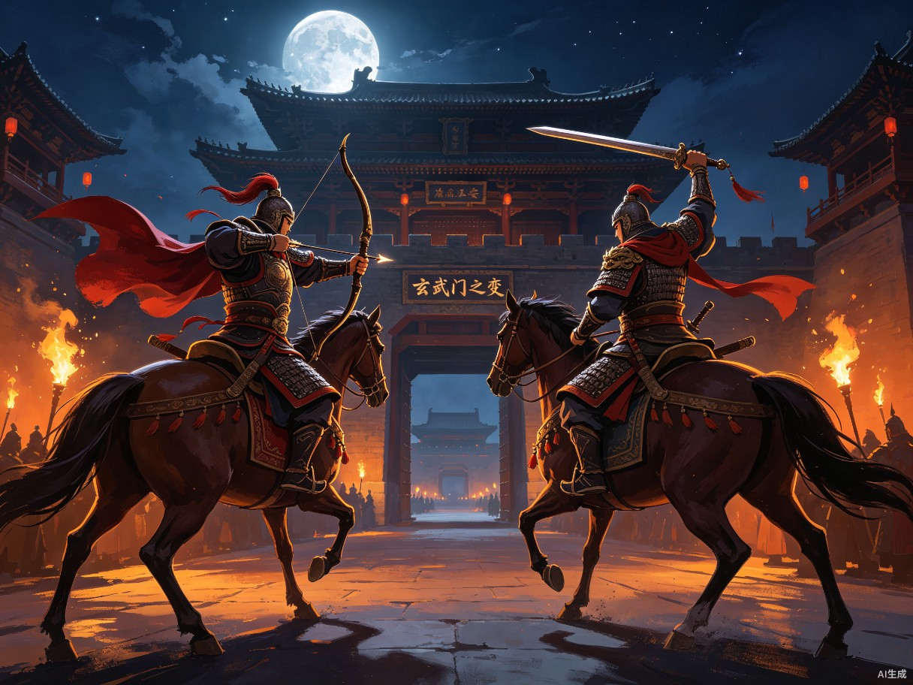
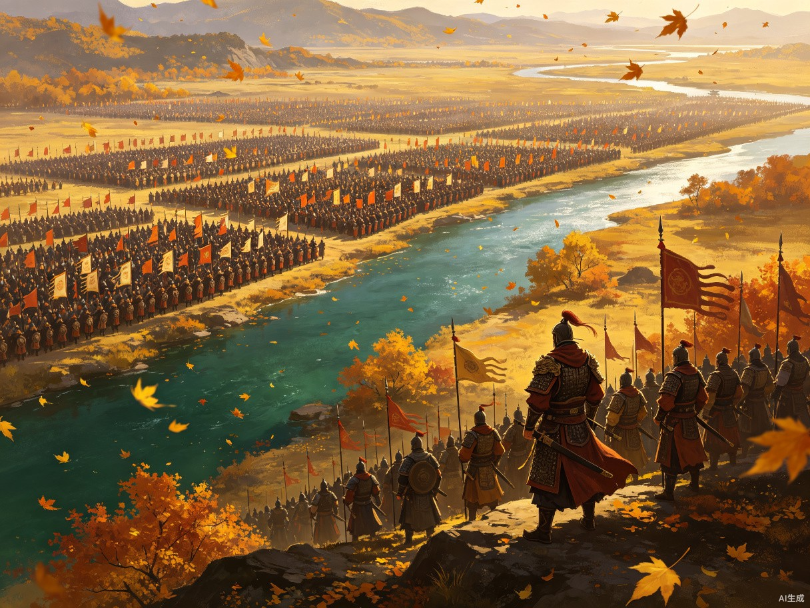
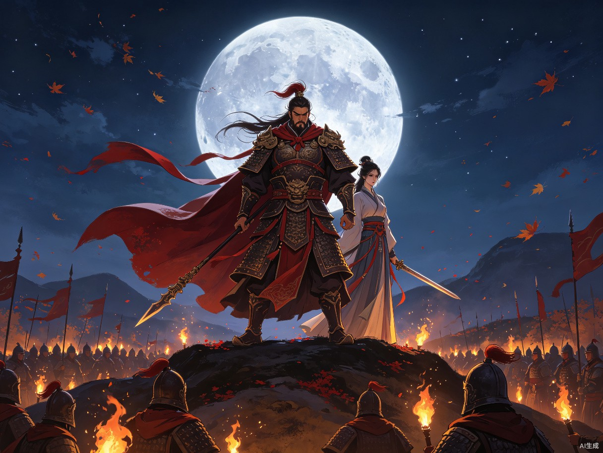
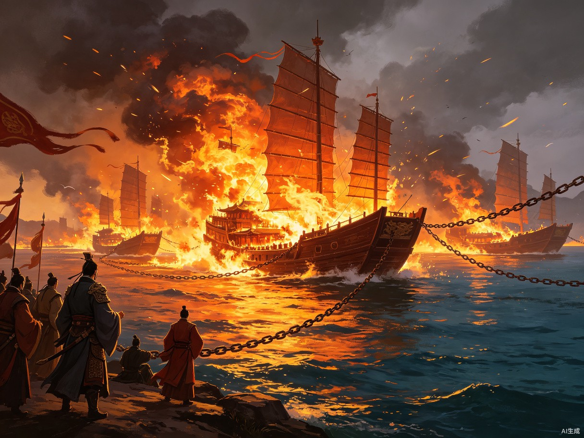
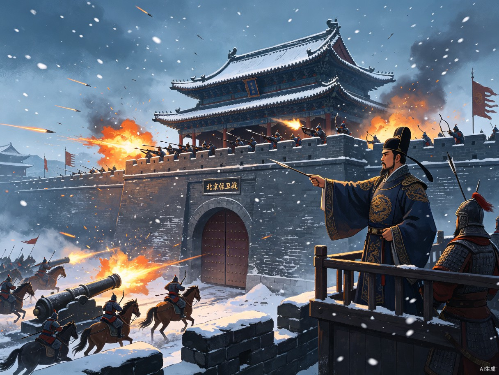

每局30分钟，你扮演关键历史人物，在3-5个决策点做出选择，AI推演不同结局。
三类核心用户，覆盖从硬核到轻度的完整光谱。
想体验历史"如果"但没时间玩深度策略游戏的人
历史课本上学过的事件，想亲身推演、加深理解
通勤、午休场景，30分钟完成一局完整体验
严格限定在明代及明代以前的中外历史，聚焦戏剧张力最强的事件。

你将扮演 李世民 / 李建成

你将扮演 谢安 / 苻坚

你将扮演 项羽 / 刘邦

你将扮演 周瑜 / 曹操

你将扮演 于谦 / 也先
每个剧本提供胜负双方两个可扮演角色，让玩家从不同立场体验同一历史事件。通关一方后解锁另一方，双视角通关解锁"历史真相"彩蛋。
同一事件，立场不同，看到的"真相"不同
你得知太子建成明日入宫，可能向父皇告发你。探子回报，东宫护卫已在集结。你必须在今夜做出决定——是先发制人，还是等待时机？
你收到消息，秦王府最近频繁调兵，李世民可能在谋划什么。明日一早你将入宫面见父皇。是装作不知道，还是提前禀报？
目的明确选剧本，或让命运来决定——两种模式满足不同玩家心理。
目的明确 · 深度体验
从剧本库中自主选择想要体验的历史剧本。适合对特定历史事件或人物感兴趣的玩家。
命运抽签 · 惊喜开局
系统随机分配一个剧本，带转盘动画揭晓仪式感。随机模式有概率抽到隐藏剧本彩蛋。
从开场到结局，每个环节都经过精心设计，确保沉浸感与节奏感。
AI生成情境叙述，交代历史背景、当前局势、关键人物，以及你面临的核心困境。
事件触发，你看到情报、听到建议。2-3个选项呈现，支持开放式输入，AI理解你的意图并推进。
每个选择后AI推演连锁反应，生成新的局势描述。局势越来越紧张，选项的代价越来越大。
关键时刻，最紧张的抉择。没有绝对正确的选择，只有不同的代价。
AI生成结局叙述、历史真实结局对比、"如果"推演分析。AI创作古诗总结和微小说，可下载精美图片或PDF。
你的决策时间线、关键转折点回顾、历史知识点补充。S/A/B/C评级，生成社交分享卡片。
不只是玩游戏——每局结束后，AI为你生成独一无二的历史文学作品。
根据你的完整表现，创作一首定制古诗。果断成功则豪迈，犹豫失败则悲壮，意外结局则讽刺。
将你的抉择历程生成800-1500字微小说。有起承转合的完整叙事，让玩家感觉"这是我的人生"。
精美图片（古诗+书法背景）、PDF文档（古诗+微小说+战绩卡片）、长图卡片，一键分享到社交平台。
这不是在玩策略游戏，而是在经历一段人生。AI叙述使用多种戏剧性写作技巧，营造沉浸感。
探子回报：太子建成已收到风声，正在调兵。
(你的心跳加速，太子府的灯火在夜色中显得格外刺眼。)
东宫护卫三百人已集结。建成明日一早将入宫见父皇。
"秦王，箭已上弦。" 尉迟恭的声音像石头一样硬。
"等明日？等明日我们就成了死尸！" 他瞪着长孙无忌。
一步。两步。三步。建成骑马穿过玄武门。你屏住呼吸。
(你想起父皇的叹息，想起东宫的步步紧逼。你闭上眼睛，终于松开了握箭的手——不是为了放下，而是为了稳住颤抖。)
"动手。" 你的声音比想象中平静。
箭离弦的那一刻，你知道，世上再无李世民，只有唐太宗。
"玄武门外的风像刀子一样割在脸上。" —— 营造氛围感
"你的手在颤抖，箭杆已经湿了。" —— 增强代入感
用人物对话制造紧张感和对立冲突
"一步。两步。三步。" —— 短句制造悬念与紧迫感
DeepSeek API驱动AI叙事，本地存储保障安全，轻量Web架构快速迭代。
使用 DeepSeek 大模型驱动AI叙事和推演。用户自行配置API Key，本地加密存储，安全可控。
追踪玩家状态（位置、情绪、资源）、世界状态（敌我力量、时间线）、已做决策及其影响。每个剧本维护双角色独立数据。
玩家做出选择后，AI依次执行：理解意图 → 调用历史知识库判断合理性 → 推演连锁反应 → 生成局势描述 → 准备下一决策点。
不只是AB选项——玩家可以自由输入任何行动，AI会理解意图并推进剧情。例如"我想派人试探一下"，AI生成试探结果。
从Demo验证到持续运营，分阶段推进内容建设。
玄武门之变
验证核心玩法
+淝水之战
+垓下之战
+赤壁之战
+北京保卫战
每月新增1-2个
持续内容更新
丰富的历史事件储备，覆盖先秦至明代，中国与世界并行。
| 时期 | 中国历史剧本 | 世界历史剧本 |
|---|---|---|
| 先秦 | 牧野之战 · 你是周武王 | 特洛伊战争 · 你是阿喀琉斯 |
| 秦汉 | 巨鹿之战 · 你是项羽 | 布匿战争 · 你是汉尼拔 |
| 三国 | 官渡之战 · 你是曹操 | — |
| 隋唐 | 玄武门之变 · 你是李世民 | 君士坦丁堡陷落 · 你是末代皇帝 |
| 宋元 | 崖山海战 · 你是陆秀夫 | 曼齐克特之战 · 你是拜占庭皇帝 |
| 明代 | 北京保卫战 · 你是于谦 | 君士坦丁堡1453 · 你是君士坦丁十一世 |